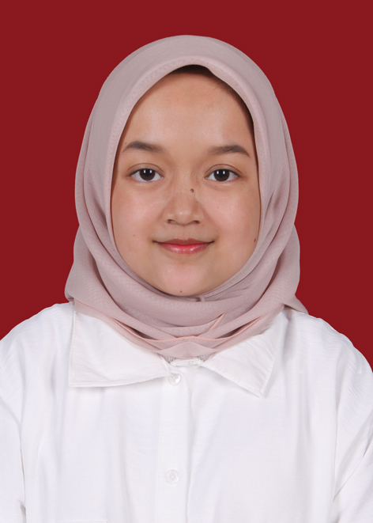

Halo, nama saya Alisha Deanova Oemar. Saya adalah mahasiswi S1 Sistem Informasi Telkom University. Saya memiliki kemampuan yang cukup baik dalam kerjasama tim dan fokus pada target. Saya senang mencoba hal baru dan ingin terus belajar untuk mengembangkan kemampuan yang saya miliki untuk mencapai impian saya.
| Jenjang Pendidikan | Nama Sekolah | Tahun |
|---|---|---|
| S1 Sistem Informasi | Telkom University | 2022 - Sekarang | SMA | SMA Yaspen Tugu Ibu 1 Depok | 2019 - 2022 |
| SMP | SMPN 4 Depok | 2016 - 2019 |
| SD | SD Yaspen Tugu Ibu 1 Depok | 2010 - 2016 |
Skill yang saya miliki adalah kemampuan menggunakan Microsoft Office, Canva dan Figma. Saya juga memiliki kemampuan dalam Bahasa Inggris.